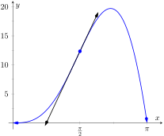
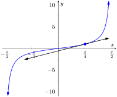

Section 2.3 showed that, in some ways, derivatives behave nicely. The Constant Multiple Rule and Sum/Difference Rule established that the derivative of \(f(x) = 5x^2+\sin(x)\) was not complicated. We neglected computing the derivative of things like \(g(x) = 5x^2\sin(x)\) and \(h(x) = \frac{5x^2}{\sin(x) }\) on purpose; their derivatives are not as straightforward. (If you had to guess what their respective derivatives are, you would probably guess wrong.) For these, we need the Product and Quotient Rules, respectively, which are defined in this section. We begin with the Product Rule.
Theorem2.4.1.Product Rule.
Let \(f\) and \(g\) be differentiable functions on an open interval \(I\text{.}\) Then \(fg\) is a differentiable function on \(I\text{,}\) and
To make our use of the Product Rule explicit, let's set \(f(x) = 5x^2\) and \(g(x) = \sin(x)\text{.}\) We easily compute/recall that \(\fp(x) = 10x\) and \(g'(x) = \cos(x)\text{.}\) Employing the rule, we have
We graph \(y\) and its tangent line at \(x=\pi/2\text{,}\) which has a slope of \(5\pi\text{,}\) in Figure 2.4.4. While this does not prove that the Product Rule is the correct way to handle derivatives of products, it helps validate its truth.

Figure2.4.4.A graph of \(y = 5x^2\sin(x)\) and its tangent line at \(x=\pi/2\)
We now do something a bit unexpected; add \(0\) to the numerator (so that nothing is changed) in the form of \({}-f(x)g(x+h)+f(x)g(x+h)\text{,}\) then do some regrouping as shown.
We have proven the product rule as desired. (In the last step, we also relied on the fact that since \(g\) is differentiable, it is also continuous, which guarantees that \(\lim_{h\to0}g(x+h)=g(x)\text{.}\))
It is often true that we can recognize that a theorem is true through its proof yet somehow doubt its applicability to real problems. In the following example, we compute the derivative of a product of functions in two ways to verify that the Product Rule is indeed “right.”
Let \(y = (x^2+3x+1)(2x^2-3x+1)\text{.}\) Find \(y'\) two ways: first, by expanding the given product and then taking the derivative, and second, by applying the Product Rule. Verify that both methods give the same answer.
The uninformed usually assume that “the derivative of the product is the product of the derivatives.” Thus we are tempted to say that \(y' = (2x+3)(4x-3) = 8x^2+6x-9\text{.}\) Obviously this is not correct.
Example2.4.6.Using the Product Rule with a product of three functions.
Let \(y = x^3\ln(x) \cos(x)\text{.}\) Find \(y'\text{.}\)
We have a product of three functions while the Product Rule only specifies how to handle a product of two functions. Our method of handling this problem is to simply group the latter two functions together, and consider \(y = x^3\cdot\left[\ln(x) \cos(x) \right]\text{.}\) Following the Product Rule, we have
Recognize the pattern in our answer above: when applying the Product Rule to a product of three functions, there are three terms added together in the final derivative. Each term contains only one derivative of one of the original functions, and each function's derivative shows up in only one term. It is straightforward to extend this pattern to finding the derivative of a product of four or more functions.
Ultimately though, we would simplify our final computation to:
This seems significant; if the natural log function \(\ln(x)\) is an important function (it is), it seems worthwhile to know a function whose derivative is \(\ln(x)\text{.}\) We have found one. (We leave it to the reader to find another; a correct answer will be very similar to this one.)
We have learned how to compute the derivatives of sums, differences, and products of functions. We now learn how to find the derivative of a quotient of functions.
Theorem2.4.8.Quotient Rule.
Let \(f\) and \(g\) be differentiable functions defined on an open interval \(I\text{,}\) where \(g(x) \neq 0\) on \(I\text{.}\) Then \(f/g\) is differentiable on \(I\text{,}\) and
The Quotient Rule is not hard to use, although it might be a bit tricky to remember. A useful mnemonic works as follows. Consider a fraction's numerator and denominator as “HI” and “LO”, respectively. Then
\begin{equation*}
\lzoo{x}{\frac{\text{ HI } }{\text{ LO } }} = \frac{\text{ LO}\cdot\text{dHI}-\text{HI}\cdot\text{dLO }}{\text{ LOLO } }\text{,}
\end{equation*}
read “low dee high minus high dee low, over low low.” Said fast, that phrase can roll off the tongue, making it easy to memorize. The “dee high” and “dee low” parts refer to the derivatives of the numerator and denominator, respectively.
Let's practice using the Quotient Rule.
Example2.4.9.Using the Quotient Rule.
Let \(f(x) = \frac{5x^2}{\sin(x) }\text{.}\) Find \(\fp(x)\text{.}\)
The Quotient Rule allows us to fill in holes in our understanding of derivatives of the common trigonometric functions. We start with finding the derivative of the tangent function.
Example2.4.10.Using the Quotient Rule to find \(\lzoo{x}{\tan(x)}\).
This is a beautiful result. To confirm its truth, we can find the equation of the tangent line to \(y=\tan(x)\) at \(x=\pi/4\text{.}\) The slope is \(\sec^2(\pi/4) = 2\text{;}\)\(y=\tan(x)\text{,}\) along with its tangent line, is graphed in Figure 2.4.11.

Figure2.4.11.A graph of \(y=\tan(x)\) along with its tangent line at \(x=\pi/4\)
We include this result in the following theorem about the derivatives of the trigonometric functions. Recall we found the derivative of \(y=\sin(x)\) in Example 2.1.19 and stated the derivative of the cosine function in Theorem 2.3.1. The derivatives of the cotangent, cosecant and secant functions can all be computed directly using Theorem 2.3.1 and the Quotient Rule.
Theorem2.4.12.Derivatives of Trigonometric Functions.
To remember the above, it may be helpful to keep in mind that the derivatives of the trigonometric functions that start with “c” have a minus sign in them.
In Example 2.4.9 the derivative of \(f(x) = \frac{5x^2}{\sin(x) }\) was found using the Quotient Rule. Rewriting \(f\) as \(f(x) = 5x^2\csc(x)\text{,}\) find \(\fp\) using Theorem 2.4.12 and verify the two answers are the same.
We found in Example 2.4.9 that \(\fp(x) = \frac{10x\sin(x) - 5x^2\cos(x) }{\sin^2(x) }\text{.}\) We now find \(\fp\) using the Product Rule, considering \(f\) as \(f(x) = 5x^2\csc(x)\text{.}\)
Finding \(\fp\) using either method returned the same result. At first, the answers looked different, but some algebra verified they are the same. In general, there is not one final form that we seek; the immediate result from the Product Rule is fine. Work to “simplify” your results into a form that is most readable and useful to you.
The Quotient Rule gives other useful results, as shown in the next example.
Example2.4.14.Using the Quotient Rule to expand the Power Rule.
Find the derivatives of the following functions.
\(\displaystyle f(x) = \dfrac{1}{x}\)
\(f(x)= \dfrac{1}{x^n}\text{,}\) where \(n \gt 0\) is an integer.
This is reminiscent of the Power Rule: multiply by the power, then subtract \(1\) from the power. We now add to our previous Power Rule, which had the restriction of \(n \gt 0\text{.}\)
Theorem2.4.15.Power Rule with Integer Exponents.
Let \(f(x) = x^n\text{,}\) where \(n\neq 0\) is an integer. Then
Taking the derivative of many functions is relatively straightforward. It is clear (with practice) what rules apply and in what order they should be applied. Other functions present multiple paths; different rules may be applied depending on how the function is treated. One of the beautiful things about calculus is that there is not “the” right way; each path, when applied correctly, leads to the same result, the derivative. We demonstrate this concept in an example.
Example 2.4.16 demonstrates three methods of finding \(\fp\text{.}\) One is hard pressed to argue for a “best method” as all three gave the same result without too much difficulty, although it is clear that using the Product Rule required more steps. Ultimately, the important principle to take away from this is: reduce the answer to a form that seems “simple” and easy to interpret. In that example, we saw different expressions for \(\fp\text{,}\) including:
They are equal; they are all correct; only the first is “simple.” Work to make answers simple.
In the next section we continue to learn rules that allow us to more easily compute derivatives than using the limit definition directly. We have to memorize the derivatives of a certain set of functions, such as “the derivative of \(\sin(x)\) is \(\cos(x)\text{.}\)” The Sum/Difference Rule, Constant Multiple Rule, Power Rule with Integer Exponents, Product Rule and Quotient Rule show us how to find the derivatives of certain combinations of these functions. The next section shows how to find the derivatives when we compose these functions together.
ExercisesExercises
Terms and Concepts
1.
True
False
The Product Rule states that \(\lzoo{x}{x^2\sin(x)}= 2x\cos(x)\text{.}\)
2.
True
False
The Quotient Rule states that \(\lzoo{x}{\frac{x^2}{\sin(x) }} = \frac{\cos(x) }{2x}\text{.}\)
3.
True
False
The derivatives of the trigonometric functions that start with “c” have minus signs in them.
4.
What derivative rule is used to extend the Power Rule to include negative integer exponents?
5.
True
False
Regardless of the function, there is always exactly one right way of computing its derivative.
6.
In your own words, explain what it means to make your answers “clear.”
Problems
Exercise Group.
Use the Product Rule to differentiate the function.
Manipulate the function algebraically and differentiate without using the Product Rule.